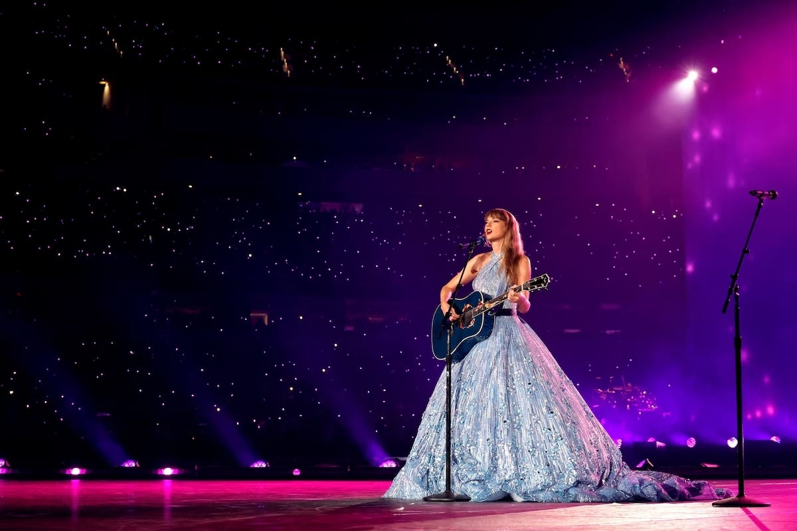

The Eras Tour fue la sexta gira de conciertos de la cantante y compositora estadounidense Taylor Swift. Después de no haber realizado la gira de sus álbumes de estudio en 2019 y 2020 con Lover, Folklore y Evermore debido a la pandemia de COVID-19, Swift se embarca en The Eras Tour en apoyo de su discografía completa. Se trata de una gira por estadios que comenzó el 17 de marzo de 2023 en Glendale, Arizona y culminó el 8 de diciembre de 2024 en Vancouver, Canadá. Diversos medios denominaron a la demanda para conseguir entradas de la gira en Estados Unidos como imprecedente y estratosférica, con alrededor de 3.5 millones de personas registradas en los programas de preventa de la plataforma de Ticketmaster. Más de 2.4 millones de entradas fueron vendidas durante el día de la preventa, 15 de noviembre de 2022, y a pesar de que el sitio web sufriera múltiples colapsos, la gira logró batir el récord de la mayor cantidad de ventas en un solo día. No obstante, Ticketmaster fue severamente criticado tanto por el público como por figuras políticas, dando apertura al debate de monopolios en espectáculos musicales en vivo. Para diciembre de 2023, se convirtió en la gira más recaudadora de la historia y la primera en recaudar más de $1000 millones de dólares convirtiéndola en la primera gira musical en la historia en rebasar los mil millones de dólares en recaudación, una vez finalizada la gira, el 9 de diciembre de 2024 la gira había recaudado $2.077 millones de dólares, convirtiéndose en la primera gira en la historia en alcanzar los dos mil millones de dólares en recaudación de acuerdo a cifras oficiales reveladas por The New York Times.

Taylor Swift interpretando su canción [Enchanted] en The Eras Tour.
Descrito por la propia Swift como un viaje a través de las eras musicales de su carrera, cada concierto tiene una duración de más de tres horas, consistiendo en 45 canciones interpretadas y segmentadas en diez actos, incluyendo el set acústico, los cuales están específicamente enfocados en cada álbum de la cantante. La gira ha sido elogiada universalmente por el concepto, producción, y las habilidades artísticas y performativas de Swift. Swift anunció y estrenó diversos proyectos durante recitales de la gira, tales como ediciones especiales de Midnights, regrabaciones de la serie denominada Taylor's Version de Speak Now y 1989, los videos musicales de «Karma» y «I Can See You», el lanzamiento de «Cruel Summer» como sencillo y diferentes ediciones físicas de su undécimo álbum de estudio The Tortured Poets Deparment. La proyección internacional en cines de Taylor Swift: The Eras Tour fue inaugurada el 13 de octubre de 2023, para convertirse consecuentemente en la película de concierto más taquillera en la historia.